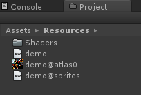
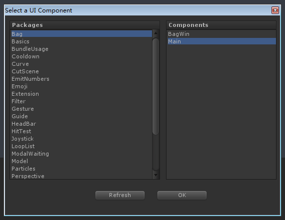
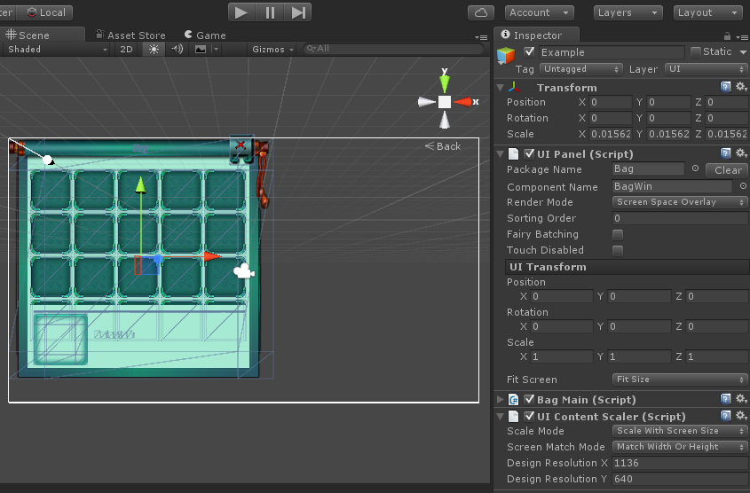
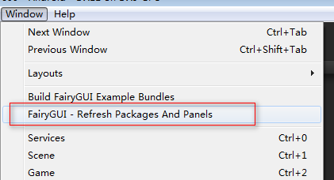
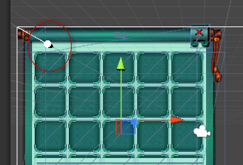
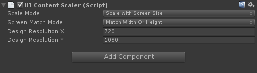

Guide

显示UI面板
加载UI包
Unity项目载入UI包有以下几种方式，开发者可以根据项目需要选择其中一种或者多种方式混搭使用：
将打包后的文件直接发布到Unity的Resources目录或者其子目录下，

这种方式处理的UI包，如果使用UIPanel显示UI，不需要任何代码载入；如果是动态创建UI，要使用代码载入包：
//demo就是发布时填写的文件名UIPackage.AddPackage("demo");//如果在子目录下UIPackage.AddPacakge("路径/demo");将发布后的文件打包为两个AssetBundle，即定义文件和资源各打包为一个bundle(desc_bundle+res_bundle)。这样做的好处是一般UI的更新都是修改元件位置什么的，不涉及图片资源的更新，那么只需要重新打包和推送desc_bundle就行了，不需要让玩家更新通常体积比较大的res_bundle，节省流量。打包程序由开发者按照自己熟悉的方式自行实现。以demo为例，请遵循以下规则打包：
- demo.bytes单独打包为desc_bundle；
- 其他资源（demo@atlas0.png等），打包到res_bundle（在此例中就是atlas0和sprites）。
这种方式处理的UI包，必须使用代码载入：
//desc_bundle和res_boundle的载入由开发者自行实现。UIPackage.AddPackage(desc_bundle, res_bundle);将发布后的文件打包为一个AssetBundle。打包程序由开发者按照自己熟悉的方式自行实现。以demo为例，将demo.bytes和其他资源（demo@atlas0.png等），都放入bundle。
这种方式处理的UI包，必须使用代码载入：
//bundle的载入由开发者自行实现。UIPackage.AddPackage(bundle);
在使用AssetBundle的载入方案中，将由FairyGUI接管bundle并负责bundle资源的释放。
UIPanel
在Unity中使用编辑器制作的界面有两种方式，第一种是使用UIPanel。
只需3步就可以使用将编辑器中制作好的界面放入到Unity的场景中。
从GameObject菜单中选择FairyGUI->UIPanel：

在Inspector里点击PackageName或者ComponentName，将弹出选择组件的窗口：

这个窗口里列出了所有工程里能找到的UI包，选择一个包和组件，然后点击OK。（如果这里找不到你的UI包，可以尝试点击Refresh刷新）。
可以看到，UI组件的内容显示出来了。（注意：Unity4版本目前不支持显示内容，只能显示线框）

如果UI包修改了，或者其他一些情况导致UIPanel显示不正常，可以使用下面的菜单刷新：

运行时，获得UIPanel的UI的方式是：
|
UIPanel在GameObjec销毁时（手动销毁或者过场景等）时会一并销毁。
UIPane只保存了UI包的名称和组件的名称，它不对纹理或其他资源产生任何引用，也就是UI使用的资源不会包含在场景数据中。
在编辑状态下，无论UI组件引用了哪些UI包的资源，包括放置在Resources目录下的和不放置在Resources下的，都能够正确显示。但当运行后，UIPanel只能自动载入放置在Resources目录或其子目录下的UI包，也只会载入自身所在的UI包，其他情况的UI包（例如引用到的UI包或打包到AssetBundle的UI包）不能自动载入。你需要在UIPanel创建前使用UIPackage.AddPackage准备好这类UI包。UIPanel在Start事件或者第一次访问UIPanel.ui属性时创建UI界面，你仍然有机会在Awake里完成这些操作。
下面是UIPanel的一些属性说明：
Package NameUI组件所在的包名称。注意，这里只是保存一个名称，并没有实际引用到任何UI数据。Component NameUI组件的名称。注意，这里只是保存一个名称，并没有实际引用到任何UI数据。Render Mode有三种：Screen Space Overlay默认值，表示这个UI在屏幕空间显示，这时Transform的Scale将被锁定，而且不建议修改Transform中的其他内容（让他们保持为0）。如果要修改面板在屏幕上的位置，使用UI Transform（参考下面关于UI Transform的说明）。
Screen Space Camera表示这个UI在屏幕空间显示，但不使用FairyGUI默认的正交相机，而是使用指定的正交相机。World Space表示这个UI在世界空间显示，由透视相机渲染。默认的使用场景的主相机，如果不是，那么设置Render Camera。当使用这种模式时，使用Transfrom修改UI在世界空间中的位置、缩放、旋转。但你仍然可以使用UI Transform。
注意：Render Mode只定义了FairyGUI对待这个UI的方式，通常是坐标相关的操作（如点击检测等），但和渲染无关。UI由哪个相机渲染是由GameObject的layer决定的。所以如果发现UI没有显示出来，可以检查一下GameObject的layer是否正确。例如如果是Screen Space，GameObject应该在UI层，如果是WorldSpace，则是在Default层或者其他自定义的层次。
Render Camera当Render Mode是Screen Space Camera或者World Space时可以设置。如果不设置，默认为场景的主相机。Sorting Order调整UIPanel的显示顺序。越大的显示在越前面。Fairy Batching是否启用Fairy Batching。关于Fairy Batching请参考DrawCall 优化。切换这个值，可以在编辑模式下实时看到DrawCall的变化（切换后点击一下Game，Stat里显示的内容才会更新），这可以使你更加容易决定是否启用这项技术。Touch Disabled勾选后，将关闭点击检测。当这个UI没有可交互的内容时可以勾选以提高点击检测时的性能。例如头顶血条这些类型的UI，就可以勾选。UI Transform当Render Mode是Screen Space时可以使用这里的设置调整UI在屏幕上的位置。你仍然可以调整UIPanel的Transform改变UI的位置，但我不建议你这样做，因为Transform中的坐标位置是没有经过不同分辨率自适应的调整的。当Render Mode是World Space时，建议使用Transform设置UI的位置，你仍然可以调整UIPanel的Transform改变UI的位置，但调整的效果可能不那么直观。同时你可以使用Scene视图中下图所示的原点调整UI Transform的位置属性：

Fit Screen这里可以设置UIPanel适配屏幕。Fit SizeUI将铺满屏幕。Fit Width And Set MiddleUI将横向铺满屏幕，然后上下居中。Fit Height And Set CenterUI将纵向铺满屏幕，然后左右居中。
这里提供的选项不多，因为FairyGUI推荐的是在FairyGUI编辑器中整体设计，而不是在Unity里摆放小元件。例如如果需要不同的UI在屏幕上的各个位置布局，你应该在FairyGUI编辑器中创建一个全屏大小的组件，然后在里面放置各个子组件，再用关联控制布局；最后将这个全屏组件放置到Unity，将Fit Screen设置为Fit Size即可。错误的做法是把各个子组件放置到Unity里再布局。
HitTest Mode这里可以设置UIPanel处理鼠标或触摸事件的方式。Default这是默认的方式。FairyGUI会用内置的机制检测鼠标或触摸动作，不使用射线，UIPanel也不需要创建碰撞体，效率比较高。Raycast在这种方式下，UIPanel将自动创建碰撞体，并且使用射线方式进行点击检测。这种方式适合于UIPanel还需要和其他3D对象互动的情况。
Set Native Children Order可以在UIPanel对象下直接挂其他3D对象，例如模型、粒子等（注意设置他们的layer和UIPanel的相同），然后勾选这个选项后，就可以让这些3D对象显示在UIPanel的层次上。相当于把外部的3D对象插入到UI层次中。但这些3D对象只能显示在这个UIPanel的内容上面，不能和这个UIPanel里面的内容穿插。一般这个功能用在制作UI中使用的特效时，方便查看最终的显示结果，也可以用来观察调整模型在UI相机下的缩放倍数。
动态创建UIPanel
UIPanel也可以在游戏中创建，为任意游戏对象动态挂接UI界面，例如：
|
UIPanel的排序
UIPanel在屏幕上的显示顺序是由他的sortingOrder属性决定的。sortingOrder越大，显示在越前面（越靠近屏幕）。但这里的排序是指同一个相机下的UIPanel。如果两个UIPanel由不同的相机渲染，那么他们的显示层次首先是由相机的深度（Depth）决定的，渲染相机深度较大的UIPanel一定显示在前面。
对于RenderMode为ScreenSpace的UIPanel，特别的，1000是一个特殊的层次，它表示2D UI（GRoot）的显示层次，也就是说，sortingOrder大于1000的UIPanel会显示在2D UI的上面，小于1000的都显示在2D UI的下面。
对于RenderMode为WorldSpace的UIPanel，也就是我们常说的3D UI（例如：头顶血条），如果希望通过z值来进行排序，而不是sortingOrder值，可以先将这一类UIPanel的sortingOrder设置为一个相同的值，例如100，然后调用：
|
这个方法有一个List.Sort的排序消耗，不建议每帧调用，可以隔一段时间，或者在对象位置改变后才调用。
关于HUD
UIPanel可以用来制作头顶血条。要注意的是：
- 放在3D对象上的UIPanel是无法和其他UIPanel进行DrawCall合并的，因此如果同屏人物很多，DC就很高。这个无法避免。如果一定要合并DC，那改用2D UI，把这些HUD对象都放到同一层里，然后与3D对象同步位置。至于近大远小之类的，要不自己按距离算scale，要不就别管了。EmitNumbers这个Demo就演示了怎样用2D UI和3D对象同步坐标。
- UIPanel没有自动面向屏幕的功能，自行挂脚本实现，使用LookAt一般就可以。
动态创建UI
在很多情况下，你并不需要将UI界面放到场景中。另外一种常用的创建UI对象的方式是：
|
动态创建的界面不会自动销毁，例如一个背包窗口，你并不需要在每次过场景都销毁。如果要销毁界面，需要手工调用Dispose方法，例如
|
使用UIPanel和UIPackage.CreateObject的场合
UIPanel最常用的地方就是3D UI。他可以方便地将UI挂到任意GameObject上。当然，UIPanel在2D UI中也可以使用，他的优点是可以直接摆放在场景中，符合Unity的ECS架构。缺点是是这种用法对UI管理带来很多麻烦，特别是对中大型游戏。
使用UIPackage.CreateObject可以使用代码创建任何界面，可以应用在传统的设计模式中，Lua支持也十分方便。不过必须要小心处理生成的对象的生命周期。
Stage Camera
当添加UIPanel后，或者第一次动态创建UI时，场景里会自动新增一个“Stage Camera”。这是默认的UI相机。你也可以手动在场景里增加这个UI相机：

“Stage Camera”一般不需要修改它的属性，除了下面这个：
Constant Size是否使用固定的相机大小。默认是true。这个选项仅影响粒子效果的缩放。当取值为true时，屏幕放大或缩小，粒子效果也会随着放大和缩小，这适用于手机游戏；当取值为false时，屏幕放大或缩小，粒子效果不会随着放大和缩小，这适用于PC游戏。
UIContentScaler
UIContentScaler组件是用来设置适配的。在启动场景里任何一个GameObject挂上UIContentScaler组件即可。并不需要每个场景都挂。

Scale Mode缩放模式。Constant Pixel Size不进行缩放。UI按1：1呈现。Scale With Screen Size根据屏幕大小进行缩放。Constant Physical Size暂不支持。
Screen Match Mode适配模式。参考上面API的说明。Design Resolution XDesign Resolution Y涉及分辨率的宽和高。Ignore Orientation通常我们设置一个设计分辨率时，FairyGUI会自动根据横竖屏设置调整设计分辨率的屏幕方向，以保证屏幕在旋转时全局缩放系数保证不变。如果你是设计PC上的程序，可能这个特性不是你需要的，那么可以勾选此选项关闭这个功能。
UIConfig
UIConfig组件用于设置一些全局的参数。使用UIConfig组件设置和在代码中使用UIConfig类设置全局参数效果是一样的。UIConfig组件还可以加载包，点击Preload Packages下面的Add即可。

坐标转换
FairyGUI是以左上角为原点的，Unity的屏幕坐标是以左下角为原点的。如果需要进行这两者的转换，可以用：
|
如果要获得任意一个UI元件在屏幕上的坐标，可以用：
|
如果要获取屏幕坐标在UI元件上的局部坐标，可以用：
|
如果有UI适配导致的全局缩放，那么逻辑屏幕大小和物理屏幕大小不一致，逻辑屏幕的坐标就是GRoot里的坐标。如果要进行局部坐标与逻辑屏幕坐标的转换，可以用：
|
如果要转换任意两个UI对象间的坐标，例如需要知道A里面的坐标(10,10)在B里面的位置，可以用：
|
如果要转换世界空间的坐标到UI里的坐标，可以用：
|
如果要转换UI里的坐标到世界空间的坐标，可以用：
|